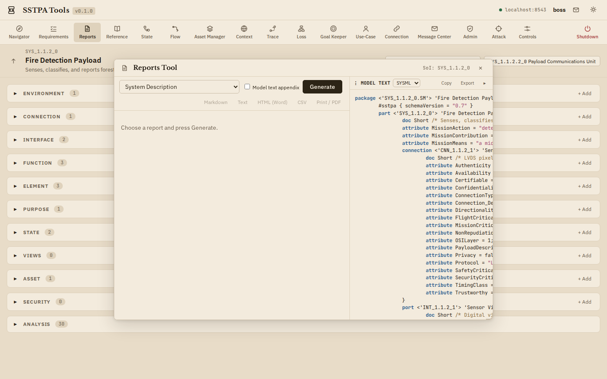
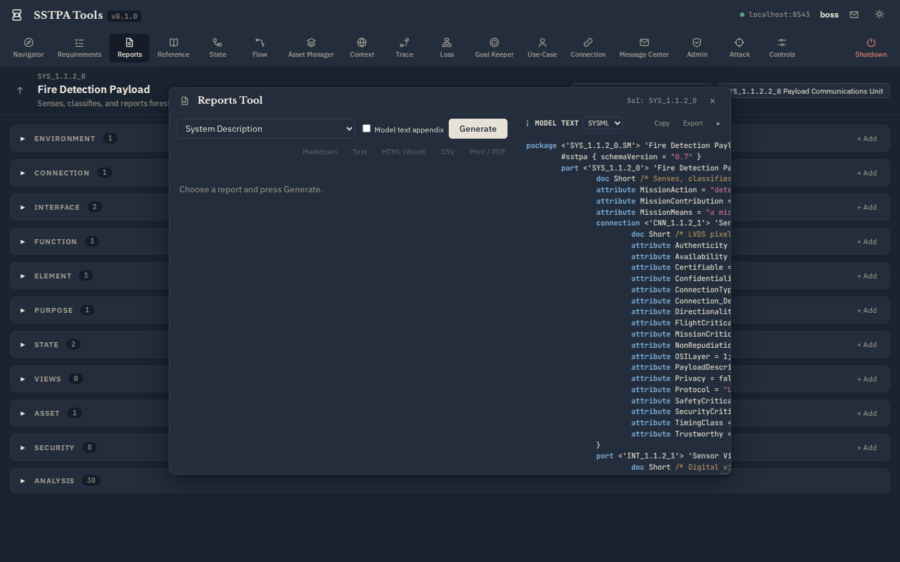
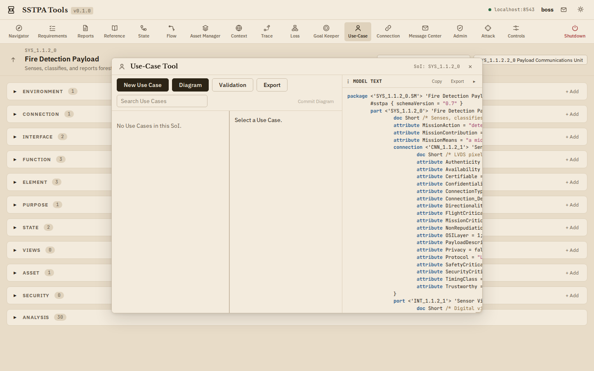
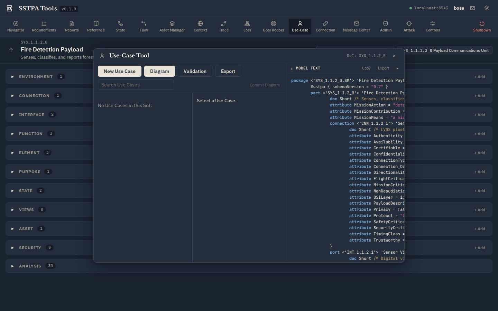

Adjacent tools & environment
Appendix
Reports Tool
Evidence packaging—not a numbered execution step. Generate System Specification, Gap Analysis (orphan/barren), Controls lists, and export Markdown / HTML / print-friendly output from an SoI.


Use-Case Tool
SysML 2 Use Case diagrams and mission threads; assign Function and Interface to Use Cases. Adjacent to Steps 1–2 (critical function / component analysis), not a numbered SSTPA step.


Environment note: Admin & Message Center
These tools support installation stewardship and data-ownership collaboration. They are out of the SSTPA execution workflow:
- Admin Tool — enroll / disenroll users, global ownership transfer (admin role).
- Message Center — direct messages and owner-change notifications.
Use them as needed for your deployment; they are not methodology steps 1–14.
Screenshot inventory
Light and Dark pairs live under /docs/screenshots/light/ and /docs/screenshots/dark/ with stable kebab-case names (gui-main.png, tool-loss.png, …).